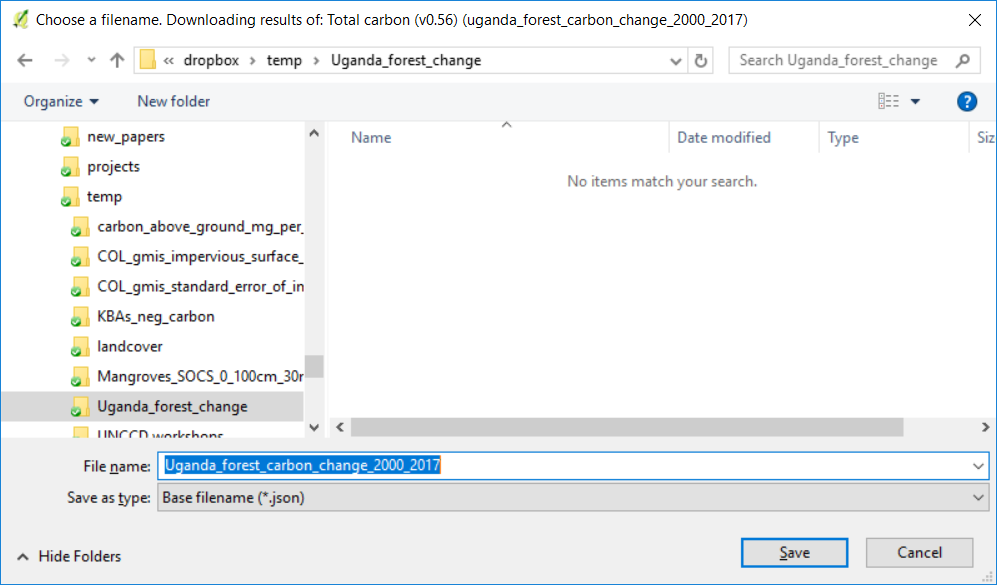

Outil de changement de forêt et de carbone¶
** Objectif **: Apprendre à calculer la couverture forestière, la perte de forêt, la biomasse aérienne et souterraine et les émissions résultant de la déforestation sous forme de trame et de résultats tabulaires avec les superficies estimées.
Temps estimé d’achèvement: 20 minutes
Accès Internet: Obligatoire
Note
Téléchargez cette page au format PDF pour une utilisation hors ligne <../ pdfs / Trends.Earth_Tutorial10_Forest_Carbon.pdf> _
Calculer et télécharger des données sur les forêts et la biomasse¶
Sélectionnez l'icône Calculer (| iconCalculator |) dans le plug-in Trends.Earth de QGIS.

Le menu ** Calculer indicateurs ** s'ouvre. Dans cette fenêtre, cliquez sur le bouton ** Calculer les couches spatiales de calcul du changement de carbone **.
Une fenêtre apparaît avec deux étapes: l’étape 1 consiste à ** Calculer les couches spatiales de changement du carbone ** et l’étape 2 à ** Calculer le tableau récapitulatif de l’évolution du carbone pour le contour **. L'étape 1 sera abordée en premier. Si l'utilisateur a déjà terminé ce processus, passez à l'étape 14 du guide.
Après avoir sélectionné l’étape 1, l’utilisateur remplira les paramètres souhaités dans l’onglet ** Définition de la forêt **.
Ensuite, sélectionnez le jeu de données de biomasse aérienne souhaité et la méthode de calcul du rapport racine / pousse.

Dans l’onglet Zone, définissez la zone d’analyse. Il y a deux options:
Utiliser les limites de pays et d’état fournies: Si vous souhaitez utiliser cette option, assurez-vous que l’option Zone administrative est sélectionnée, puis sélectionnez Premier niveau (pays) ou Deuxième niveau (état ou province selon le pays).
Note
Les Natural Earth Administrative Boundaries fournies dans Trends.Earth sont dans le public domain. Les limites et les noms utilisés, ainsi que les désignations utilisées, dans Trends.Earth n’impliquent pas l’approbation officielle ou l’acceptation par Conservation International Foundation, ou par ses organisations partenaires et contributeurs.
Si vous utilisez Trends.Earth à des fins officielles, il est recommandé de choisir une frontière officielle fournie par le bureau désigné de votre pays.
Utilisez votre propre fichier de zone: Si vous souhaitez utiliser votre propre zone d’analyse, assurez-vous que l’option Area from file est en surbrillance. Cliquez ensuite sur Parcourir et naviguez jusqu’au dossier de votre ordinateur où vous avez stocké le fichier.
Lorsque vous avez sélectionné la zone pour laquelle vous souhaitez calculer les indicateurs, cliquez sur Suivant.
Dans l’onglet Options, vous pouvez définir le nom de la tâche et créer Notes pour identifier l’analyse que vous exécutez. Quelle information à indiquer est facultative, mais nous suggérons de noter:
Domaine d’analyse
Rendez-vous
Les indicateurs fonctionnent

Lorsque vous avez terminé, cliquez sur ** Calculer ** pour que la tâche soit soumise à Google Earth Engine à des fins de calcul. Vous remarquerez que la fenêtre ** Calculer le changement du total de carbone ** disparaîtra et que vous serez ramené à QGIS.
Une barre bleu clair apparaîtra temporairement, indiquant que la tâche a été soumise avec succès. L'analyse sera exécutée sur les serveurs de Google et pourrait prendre entre 5 et 15 minutes en fonction de la taille de la zone d'étude (les zones plus grandes ont tendance à prendre plus de temps).

Note
Reportez-vous au tutoriel: ref: task_download pour des informations détaillées sur la procédure de contrôle de l'état des tâches soumises et sur le téléchargement des résultats depuis Trends.Earth.

10. To view the Google Earth Engine (GEE) tasks you have running, and to download your results, select
the cloud with the arrow facing down icon ( ). This will open up the Download results
from Earth Engine dialog box. Select Refresh list to show the task.
). This will open up the Download results
from Earth Engine dialog box. Select Refresh list to show the task.

La tâche indiquera: RUNNING dans la colonne Statut si le traitement est toujours en cours. Lorsque la tâche est terminée, le message FINISHED apparaît après avoir sélectionné à nouveau ** Refresh List **.
Une fois que la tâche est en cours d’exécution, mettez en surbrillance la tâche terminée et sélectionnez ** Télécharger les résultats **. Enregistrez la tâche.
Vous verrez un message indiquant que la tâche est en cours de téléchargement. Une fois terminé, il y aura une sortie «Total carbone (2000, tonnes par ha)» et «Perte de forêt (2000 à 2017)» dans la fenêtre QGIS.


Si vous le souhaitez, vous pouvez ajouter des informations contextuelles (par exemple, frontières du pays, routes et villes principales). Reportez-vous au tutoriel: ref: tut_load_data pour des informations détaillées sur le chargement d'un fond de carte.
Calculer le tableau récapitulatif¶
Sélectionnez l'icône Calculer (| iconCalculator |) dans le plug-in Trends.Earth de QGIS.
Le menu ** Calculer indicateurs ** s'ouvre. Dans cette fenêtre, cliquez sur le bouton ** Calculer les couches spatiales de calcul du changement de carbone **.
Sélectionnez l’Étape 2: ** Calculez le tableau récapitulatif des changements de carbone pour le contour **.

Dans l'onglet ** Entrée **, sélectionnez un dossier de sortie et un nom de fichier.
Dans l'onglet ** Sortie **, sélectionnez ** Parcourir ** pour répertorier un dossier de sortie et un nom de fichier.
Dans l’onglet Zone, définissez la zone d’analyse. Il y a deux options:
Utiliser les limites de pays et d’état fournies: Si vous souhaitez utiliser cette option, assurez-vous que l’option Zone administrative est sélectionnée, puis sélectionnez Premier niveau (pays) ou Deuxième niveau (état ou province selon le pays).
Utilisez votre propre fichier de zone: Si vous souhaitez utiliser votre propre zone d’analyse, assurez-vous que l’option Area from file est en surbrillance. Cliquez ensuite sur Parcourir et naviguez jusqu’au dossier de votre ordinateur où vous avez stocké le fichier.
Lorsque vous avez sélectionné la zone pour laquelle vous souhaitez calculer les indicateurs, cliquez sur Suivant.
Dans l’onglet Options, vous pouvez définir le nom de la tâche et créer Notes pour identifier l’analyse que vous exécutez. Quelle information à indiquer est facultative, mais nous suggérons de noter:
Domaine d’analyse
Rendez-vous
Les indicateurs fonctionnent

Une fois terminé, cliquez sur ** Calculer ** et la tâche sera soumise à votre ordinateur localement. Vous remarquerez que le tableau récapitulatif ** Calculer les changements de carbone pour la limite ** disparaîtra et que vous serez ramené à QGIS. Une barre bleu clair apparaîtra dans la fenêtre de QGIS. Ceci s'exécute localement sur votre ordinateur. NE sélectionnez PAS ** x ** ou ** Annuler ** tant que la tâche n'est pas terminée!

Une fenêtre apparaîtra une fois le résumé terminé. Sélectionnez ** OK **.
Si une fenêtre d'erreur apparaît, sélectionnez le ** Oui ** et le résumé s'ouvrira.
Le tableau récapitulatif apparaîtra.